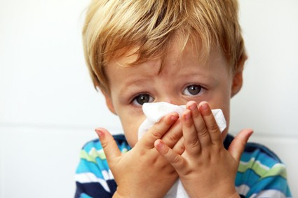
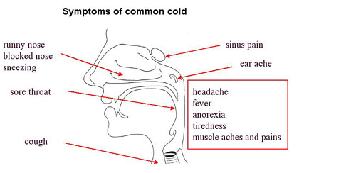
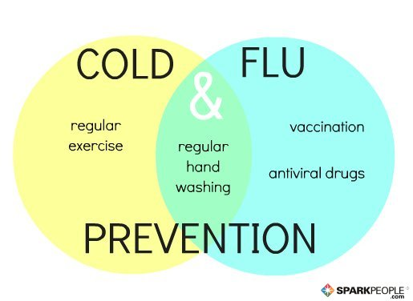

Cold is an illness that is short in duration, usually less than two weeks, does not usually produce fever, except in children. It is most prevalent among children, and seem to be related to youngsters' relative lack of resistance to infection and to contacts with other children in schools. The common cold causes irritation and drainage in any or all of the airways including the nose, sinuses, throat, voice box, and often the bronchial tubes.
Depending on the virus type, any or all of the following routes of transmission may be common:
Touching infectious respiratory secretions on skin or personal objects which have been contaminated by the patient.
Inhaling relatively large particles of respiratory secretions transported briefly in the air.
Inhaling droplets, smaller infectious particles from coughing or sneezing by patients suffering from cold.

Sore throat.
Running nose or Leaky nose.
Sneezing and cough.
Nasal congestion.
Headache and body pain.
Low grade fever (more likely in infants and young children).
Green or yellow sputum or nasal secretions suggest a secondary bacterial infections of the middle ear or sinusitis requiring treatment with antibiotics. Cold symptoms can last from two to 14 days, but two-thirds of people recover in a week. If symptoms occur often or last much longer than two weeks, with high fever, significantly swollen glands, severe facial pain in the sinuses, and a cough that produces mucus, it indicates a complication or more serious illness requiring a doctor's attention.

Infection of cold disappears within seven to ten days. Usually, common cold does not require any treatment. But, if the symptoms continue, or if certain pre-existing respiratory condition become worse, it indicates the involvement of bacteria in addition to the virus. In such condition antibiotics might have to be administrated to improve the condition. Only symptomatic treatment is available for uncomplicated cases of the common cold: bed rest, plenty of fluids, gargling with warm salt water, petroleum jelly for a raw nose, and aspirin or acetaminophen to relieve headache or fever.